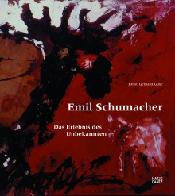

Emil Schumacher
DAS ERLEBNIS DES UNBEKANNTENAls der Krieg zu Ende ging, war er bereits 33 Jahre und stand dennoch erst am Beginn. Emil Schumacher (1912 - 1999) war Teil des Aufbruchs der Kunst nach 1945. Es war die Zeit der École de Paris, und in Deutschland fanden sich junge Künstler in der Gruppe "junger westen", der auch Schumacher zugehörte. Die Künstlergeneration jener Jahre debattierte über den Dogmatismus des rechten Winkels in der Tradition des Bauhauses und suchte die freie Expressivität des Informel, erstrebte die Materialität des Bildes und ihre Verletzung in einem Akt der Zerstörung.
Seit den 1950er-Jahren fand die Malerei Schumachers auch internationale Beachtung. Ausstellungen in Italien und den Vereinigten Staaten belegen dies ebenso wie die Beteiligungen an der documenta II und III in Kassel, den Biennalen in Venedig und Sao Paulo und die Gastprofessur in Minneapolis.
Ende der 1960er-Jahre wurden Op-Art und Pop-Art zu neuen Herausforderungen. Überraschend war Schumachers künstlerische Reaktion. Seinen Reisen nach Nordafrika, nach Tunesien und Marokko, wie auch in den Irak, die zur Auseinandersetzung mit anderen Kulturen führten, folgte die Rückkehr zur Gegenständlichkeit in seiner Malerei, aus der im Spätwerk eine Reihe seiner wohl beeindruckendsten Gemälde hervorgingen.
Hg.: Ulrich Schumacher und Ernst-Gerhard Güse
Schriften der Emil-Schumacher-Stiftung Band 2
504 Seiten, 418 Abbildungen, € 49,80 (€ 58,- im Buchhandel)
ISBN: 978-3-7757-2082-3 - erhältlich unter info@esmh.de